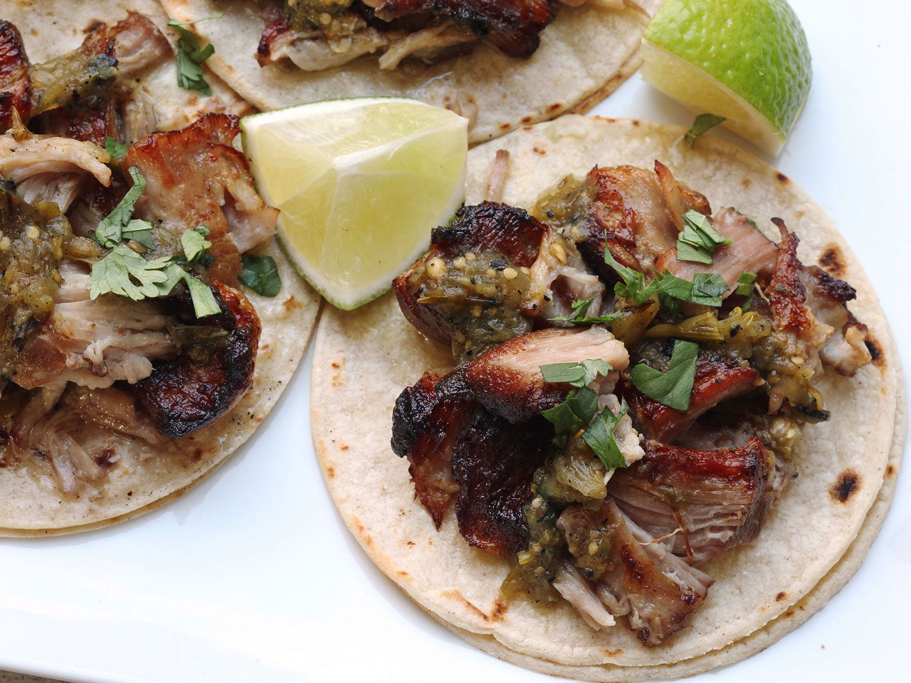

Sous Vide Carnitas

Description
These incredibly moist, melt-in-your-mouth carnitas are infused with warm
spices and become the base for a variety of dishes. My favorite way to
eat these is inside corn tortillas, topped with cilantro and onion,
but it's also delicious in quesadillas, posole, nachos, or atop a salad!
For added flavor, rub the seasonings on the pork the night before.
Ingredients
- 2 teaspoons granulated garlic
- 2 teaspoons ground cumin
- 1 teaspoon salt
- 1 teaspoon dried Mexican oregano
- 1/2 teaspoon ground coriander
- 1/2 teaspoon black pepper
- 1/4 teaspoon ground cinnamon
- 1 (4 pound) boneless pork butt
- 1 tablespoon chicken soup base (such as Better than Bouillon)
- 1 medium orange, sliced
- 3 large bay leaves
- 1 tablespoon vegetable oil, or as needed
Steps
- Fill a large pot with water and place a sous vide immersion cooker
into the water. Set temperature to 165 degrees F (74 degrees C)
according to manufacturer's directions.
- Combine granulated garlic, cumin, salt, oregano, coriander, and
black pepper in a small bowl.
- Cut pork butt into 2 chunks and rub with soup base. Sprinkle with
spice mixture and rub until evenly distributed. Place pork into a
large vacuum bag. Add orange slices and bay leaves throughout the
bag. Seal using a vacuum sealer.
- Place bag into the water and set timer for 24 hours, turning bag
over halfway through. When done, remove pork to a platter,
reserving some or all of the juices.
- To crisp up carnitas, heat vegetable oil in a large cast iron
skillet over high heat until smoking. Add shredded pork and fry
until edges are browned and crispy, 1 to 2 minutes. Drizzle with
reserved juices, if desired. Alternately, you may crisp under an
oven broiler for 3 to 4 minutes.